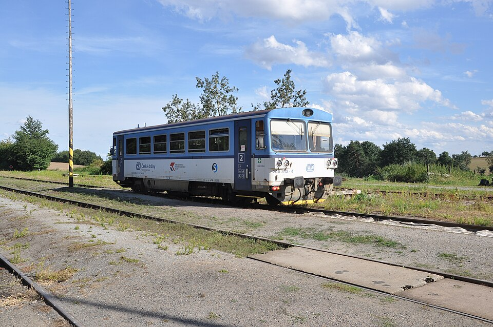

Cesta do Mšena je tip na pomalejší den s lokálkou a procházkou. Z Prahy se vydej přes Mělník a poslední část nech na malé trati, která pokračuje dál směrem k Mladé Boleslavi.
Jak si výlet poskládat
-
Naplánuj příjezd přes Mělník
Najdi návaznost z Prahy přes Všetaty a Mělník do Mšena. Počet přestupů se liší podle konkrétního spojení. Nech si rezervu a hned si ulož i návrat.
-
Rozhodni se podle počasí
Ve Mšeně můžeš zůstat na krátkou procházku městem, nebo si zvolit pěší trasu směrem do Kokořínska. Délku vybírej podle času do posledního použitelného spoje.
-
Měj připravenou cestu zpět
Základní varianta se vrací stejnou cestou přes Mělník. Případnou delší variantu přes Mladou Boleslav si předem ověř jako samostatné spojení.
Proč právě sem
Pro ty, které baví menší stanice a kombinace vlaku s přírodou. Na rozdíl od rychlého pražského okruhu tady nech plán raději volnější.
Co ověřit před odjezdem
Kokořínský rychlík je sezónní alternativa přímé cesty z Prahy. Pro rok 2026 oficiální jízdní řád uvádí víkendy a svátky od 21. 3. do 1. 11.; v listopadu s ním tedy tento návrh nepočítá.
Uvedená trasa je návrh výletu, nikoli potvrzení provozu pro konkrétní den. Pěší úseky si přizpůsob podle mapy, počasí a času do návratu.
Podklady zkontrolovány .